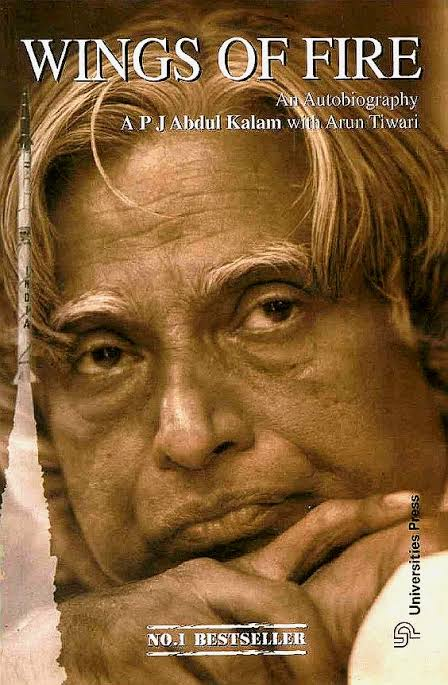

WINGS OF FIRE

ABOUT THE BOOK
Wings of Fire (1999), is the autobiography of the Missile Man of India and the former President of India, Dr. A. P. J. Abdul Kalam. It was written by him and Arun Tiwari.In the autobiography, Kalam examines his early life, effort, hardship, fortitude, luck and chance that eventually led him to lead Indian space research, nuclear and missile programs. Kalam started his career, after graduating from Aerospace engineering at Madras Institute of Technology, at Hindustan Aeronautics Limited and was assigned to build a hovercraft prototype. Later he moved to ISRO and helped establish the Vikram Sarabhai Space Centre and pioneered the first space launch-vehicle program. During the 1990s and early 2000, Kalam moved to the DRDO to lead the Indian nuclear weapons program, with particular successes in thermonuclear weapons development culminating in the operation Smiling Buddha and an ICBM Agni.